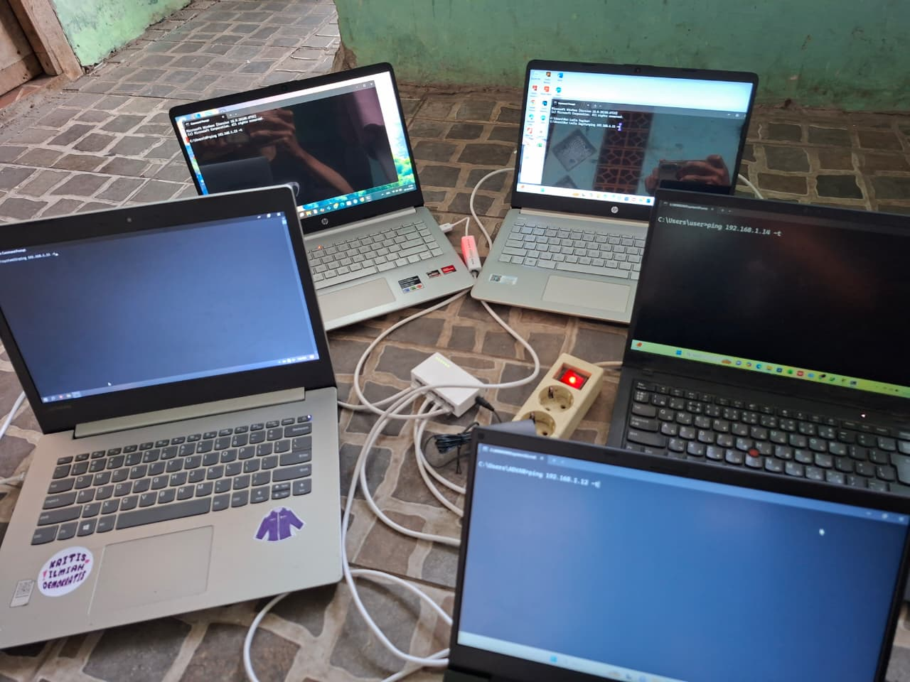

Instalasi dual-Booting OS
Melakukan Instalsi dual boot os yaitu linux dan windows serta melakukan praktik kirim koneksi linux ke windows maupun sebaliknya.

About Project
Pada projek ini saya melakukan instalasi dual-booting ke beberapa laptop kemudian saya juga memasang kan kabel LAN untuk melakukan cek koneksitivtas antara laptop satu dengan laptop lainnya, selain itu saya juga memasangkan ke hub switch hub agar saling berkoneski menggunakan kabel LAN.
Pada project ini saya mengembangkan saya mengembangkan pengetahuan saya terkait linux dan networking.
Technologies
Linux Terminal
Linux
Kembali